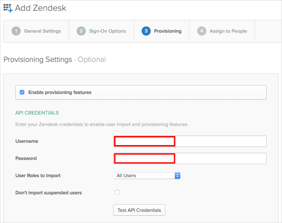
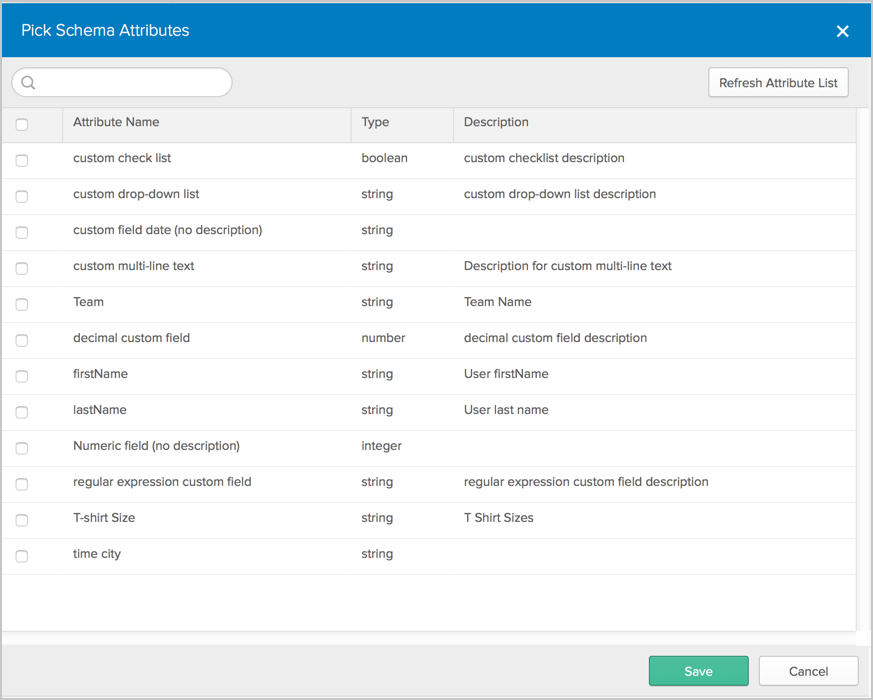
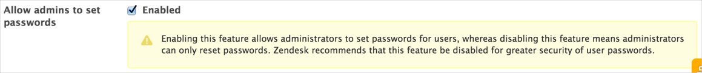
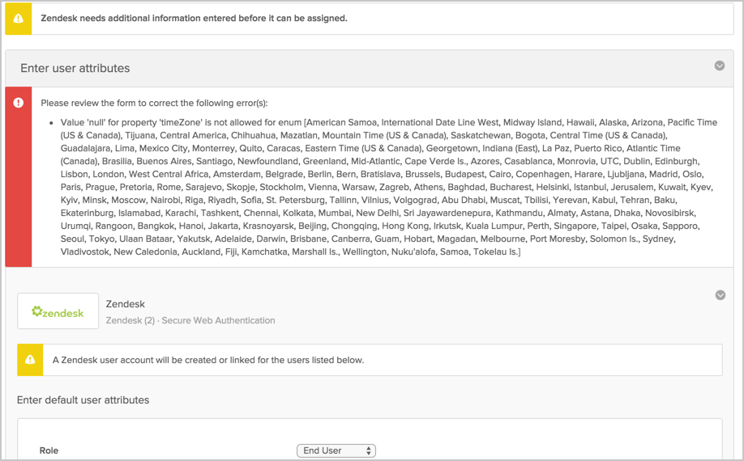

This guide provides the steps required to configure Provisioning for Zendesk, and includes the following topics:
The following provisioning features are supported:
New users created in the third party application will be downloaded and turned in to new AppUser objects, for matching against existing OKTA users.
New users created through OKTA will also be created in the third party application.
Updates made to the user's password through OKTA will be pushed to the third party application.
Updates made to the user's profile through OKTA will be pushed to the third party application.
Deactivating the user or disabling the user's access to the application through OKTA will deactivate the user in the third party application.
Reactivating the user through Okta will reactivate the user in the 3rd party application.
Configure your Provisioning settings for Zendesk as follows:
Check the Enable provisioning features box.
Enter your Zendesk API credentials in the Username and Password fields.
Only verified account credentials can be used (see https://support.zendesk.com/entries/23242272-Verifying-a-user-s-email-address for more information).
Only accounts without two-factor authentication can be used.
Select what kind of User Roles to Import; either All Users or Only Admins and Agents.
Check Don’t import suspended users if inactive users should be ignored during import.

Scroll down and select the Provisioning Features you want to enable.

Click Save.
You can now assign people to the app (if needed) and finish the application setup.
In order to use schema discovery, make sure you have the UD feature flag PROV_ZENDESK_ENABLE_UD turned on before you create your app instance.
Zendesk supports User's Schema Discovery, so you can add some extra attributes to User's Profile, to do that, follow the instructions below:
In Okta, from the Admin dashboard, select Directory > Profile Editor.
Select the APPS section in the left navigation bar, then find your app in the list.
Check the list of attributes, and if you decide you need more, click Add Attribute. A list of extended attributes will appear:

Select the attributes you want to add, then click Save.
You can now import and push these user attribute values to/from Zendesk.
In order to ensure that Sync Unique Password works for the Zendesk application, make sure you have enabled All admins to set passwords, as shown below (Zendesk Global section, Security > Settings):

If you are in the process of creating a Zendesk app instance with PROV_ZENDESK_ENABLE_UD provisioning feature turned on, you will encounter an error similar to the following during the app assignment flow.

The workaround for this is to first create the app instance without assigning it to any user/group. Once the app instance exists, you can then assign the app to the respective people by either:
By User: From the Okta admin dashboard, navigate to Directory > People then assign apps to users.
By Application: From the Okta admin dashboard, navigate to Applications then assign apps to users.